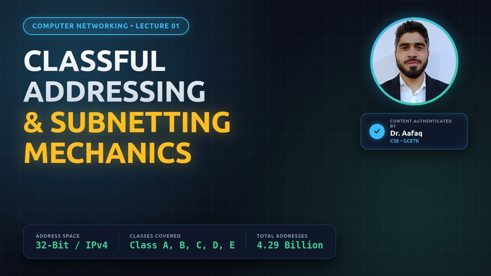
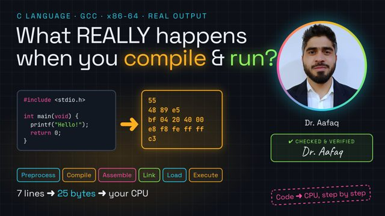
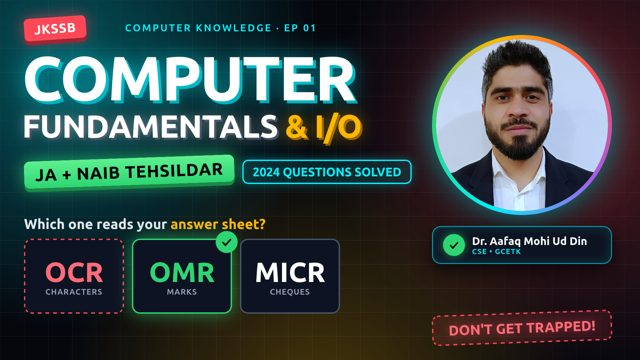
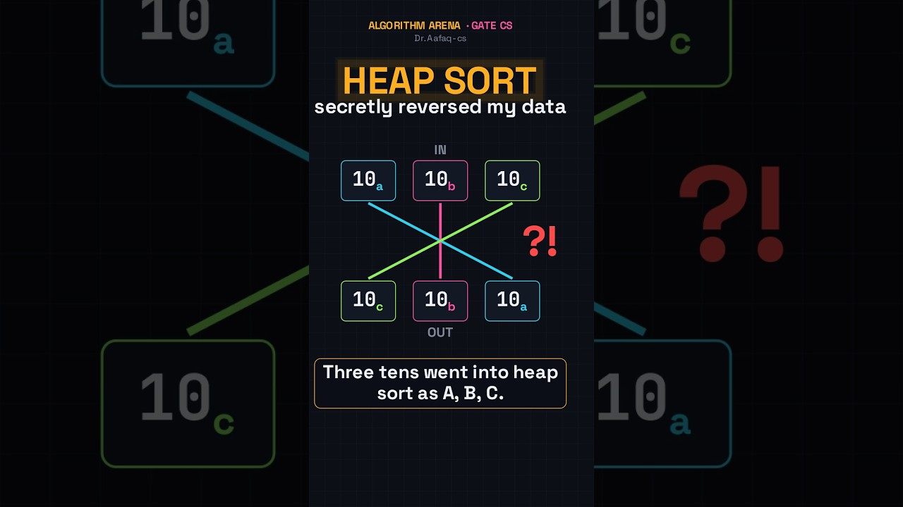

Video courses
Free visual lectures for GATE and engineering students, on my YouTube channel. Every graph is computed from real data, and every answer is verified. Pick a course to see its lectures.

The full Machine Learning section of the GATE DA syllabus, in 20 visual lectures built on real data, with GATE-style questions in every video.

What GATE DA is, the exam pattern, the 7 syllabus pillars, and your roadmap.

Algorithm design and analysis for GATE CS, with PYQs in every concept.

How your source code becomes machine code: the phases of a compiler, visualized step by step for GATE CS/IT.

IP addressing, subnetting and routing, explained step by step.

What really happens between your C code and the CPU.

Exam-focused computer knowledge for JKSSB aspirants: the complete 10-episode series.

Quick visual ideas from every series, each under a minute.